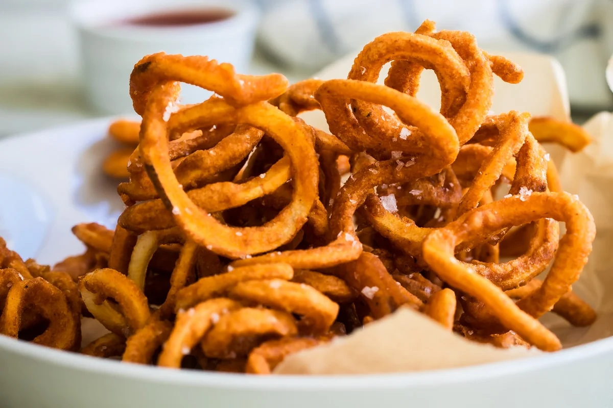

Our Menu
-
Burger

Sliced bun, typically garnished with various toppings such as lettuce, tomato, onion, cheese, pickles, and condiments like ketchup and mustard.
-
Pizza

Flat base of dough topped with tomato sauce, cheese, and various toppings such as meats, vegetables, and herbs. It is baked in an oven and served hot.
-
Sandwich

Made by placing ingredients such as meats, cheeses, vegetables, and spreads between slices of bread or within a single bread roll. Sandwiches can be served cold or hot and come in various styles and flavors.
-
Fries

They are often served as a side dish or snack and can be enjoyed with condiments such as ketchup, mayonnaise, or vinegar.
-
Curly Fries
They offer a fun twist on the classic fry and are often seasoned with spices for extra flavor.
-
Potato Mojos

They are a popular appetizer or side dish known for their flavorful seasoning and satisfying crunch.
-
Sparkling Water
It contains no added sugars or calories and comes in various flavors, offering a bubbly alternative to still water.
-
Cola

It is typically sweetened with sugar or artificial sweetenersand enjoyed chilled as a refreshing beverage.
-
Beer
It comes in various styles and flavors, ranging from light and refreshing lagers to rich and complex ales, and is often served chilled in bottles or on tap.
About Us
At our establishment, we take pride in offering a diverse and delicious selection of dishes to satisfy every taste bud. From the classic and beloved Burger, with its tender patty and flavorful toppings, to the Italian favorite Pizza, with its crispy crust and melted cheese, we have something for everyone. For a lighter option, try our Sandwiches, made with fresh ingredients and served on your choice of bread. And of course, no meal is complete without a side of our crispy Fries, Curly Fries, or Potato Mojos. To accompany your meal, we offer a variety of beverages to choose from. For a refreshing and calorie-free option, try our Sparkling Water, available in various flavors. If you're in the mood for something sweet and fizzy, our Cola is the perfect choice. And for those who enjoy an alcoholic beverage, we have a wide selection of Beers, ranging from light and refreshing lagers to rich and complex ales. At our establishment, we are committed to providing high-quality food and drink, along with excellent customer service. We hope to see you soon!
Contact
Visit us at our location (Cavite, Imus) or contact us at (123-456-7890).